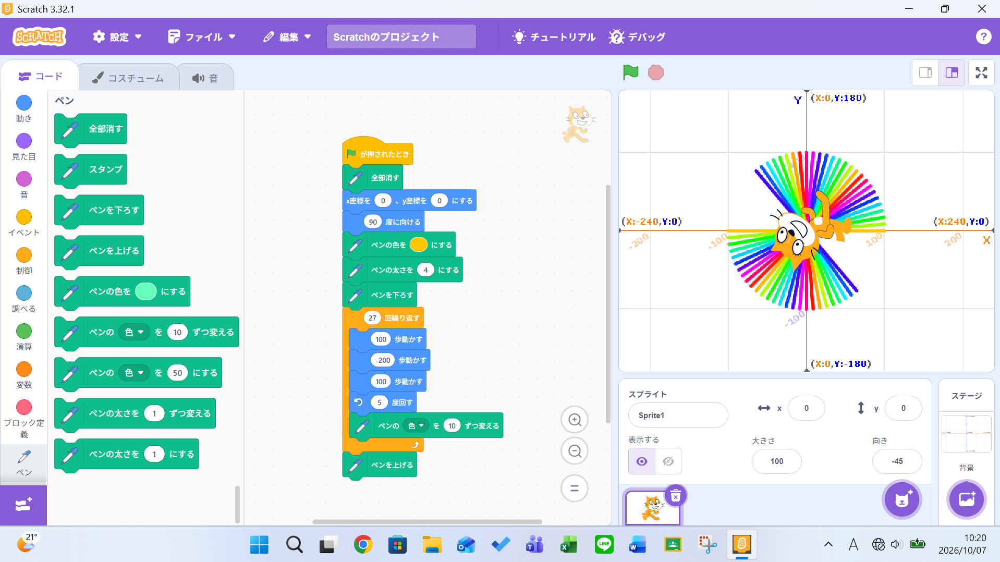
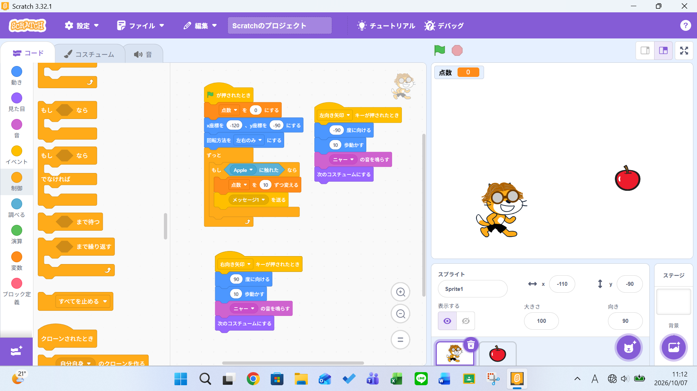

1週目のレポート ： 公大高専１年実習I-1
4b班38番 マイケル
第1週目
1-1 サイエンスアート

1.内容
スクラッチを使いネコのキャラクターをプログラムで動かし、移動に合わせて線を引くということを行った。
また動かせる歩数や角度を変えることにより書かれた線にどのような変化が生じるのかを学んだ。
2.感想
私は体験入学でIコースを選んだため一度行ったことがあったが、マニュアル通りではなく自分で描きたい線や動きを
どのような歩数や角度で実行されるのか考えることは難しかった。
1-2 ゲーム

1.内容
スクラッチを使いネコのキャラクターをキーボードの矢印キーで移動させ、落ちてくるリンゴを掴むというプログラムを組んだ。
リンゴを掴むことができた場合音を出したり点数を加えるなどのプログラミングも行った。
2.感想
今回は動作や見た目のプログラムだけではなく、演算をつかってプログラミングをしたためよりゲームらしく作ることができたが、
自分で演算に入れる数値をどのようにすれば不自然でないか考えることが難しかった。
1-3 ホームページ作成
私のホームページ
1.内容
githubというサイトを使い自分のホームページを作った。テンプレートがあるため、テンプレートを自分の
情報に書き換えて作り、基本的なgithubの使い方を学ぶことができた。
2.感想
githubという言葉は聞いたことがあったが、使ったことはなかったため操作が難しかった。
だが使い方を理解すると操作が楽になり楽しかった。
各ページへのリンク
1週目のレポート
2週目のレポート
3週目のレポート
私のホームページ